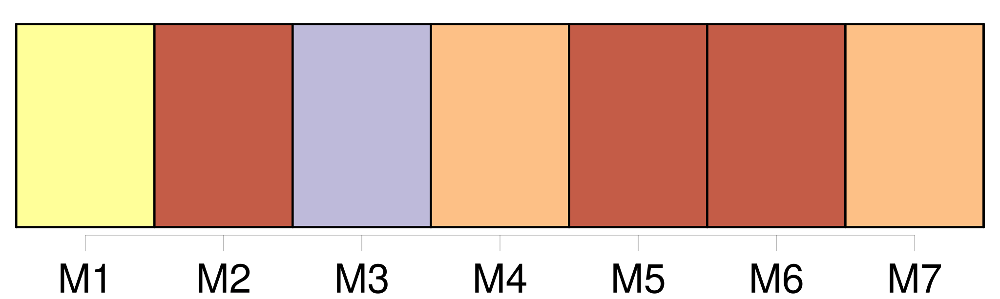

Longueur nb maillons : 185 mentions |
 |
[La mère] se penche hors de [son] lit, afin de le rassurer ; et le grand-père allume la lampe en tâtonnant, pour que le petit n’ ait pas peur de la nuit. [3 phrases] [Louisa] lui fait signe de ne pas s’ approcher.
[Elle] est d’ un blond presque blanc ; [ses] traits sont tirés ; [sa] douce figure mouton est marquée de taches de rousseur ; [elle] a des lèvres pâles et grosses, qui ne parviennent pas à se rejoindre et qui sourient avec timidité ; [elle] couve l’ enfant des yeux – des yeux très bleus, très vagues, où la prunelle est un point tout petit, mais infiniment tendre. [10 phrases] [Louisa] fit une moue de petite fille grondée.
Jean-Michel [la] regarda du coin de l’ œil, et rit. – [Tu] ne voudrais pas que je [te] dise qu’ il est beau?? [Tu] ne me croirais pas. Allons, ce n’ est pas de [ta] faute. [3 phrases] Peut-être sentait -il dans les yeux de [sa mère] une caresse qui l’ engageait à se plaindre.
[Elle] lui tendit les bras, et [dit] : [3 phrases] [Louisa] saisit l’ enfant de [ses] mains fiévreuses et le [cacha] contre [son] sein.
[Elle] le contempla avec un sourire confus et ravi :
[mon] pauvre petit, dit [-elle] toute honteuse, que tu es laid, que tu es laid, comme [je] t’ aime! [1 phrases] – [Bonne fille] , dit -il. [Va] , ne te [tourmente] pas, il a le temps de changer. [5 phrases]
Il se tut un instant, méditant s’ il ne conviendrait pas de développer cette pensée ; mais il ne trouva rien de plus à dire ; et, après un silence, il reprit d’ un ton irrité : – [Je] crois qu’ il est au théâtre, dit timidement [Louisa] [5 phrases] [J’] aurai mal compris. [4 phrases]
– Non, père, non, père, dit précipitamment [Louisa]
Le vieux [la] regarda ; [elle] évita son regard.
– Ce n’ est pas vrai, [tu] mens.
[Elle] pleura silencieusement. [3 phrases]
[La mère] et l’ enfant tressaillirent.
– Père, [je] vous en prie, dit [Louisa] , il va pleurer. [3 phrases] … Mais [toi] , [toi] , [tu] n’ es donc pas capable de l’ empêcher?? [1 phrases] c’ est [ton] rôle. Si [tu] le retenais au logis!!
… – Ne [me] grondez pas encore, [je] suis déjà si malheureuse!! [J’] ai fait tout ce que [j’] ai pu. Si vous saviez comme [j’] ai peur, quand [je] suis seule!! Il [me] semble que [j’] entends toujours son pas dans l’ escalier. Alors [j’] attends que la porte s’ ouvre, et [je] me demande : Mon Dieu!! [1 phrases]
… Cela [me] rend malade d’ y songer. [Elle] était secouée par [ses] sanglots. [1 phrases]
Il vint près d’ [elle] , ramena les couvertures défaites sur [ses] épaules qui tremblaient, et [lui] caressa la tête, de sa grosse main :
[Elle] s’ apaisa à cause du petit, et [essaya] de sourire.
– J’ ai eu tort de [vous] dire cela.
Le vieux [la] regarda en hochant la tête : – C’ est [ma] faute à [moi] , dit [-elle] Il ne devait pas [m’] épouser. [1 phrases]
– Que veux [-tu] qu’ il regrette? [1 phrases]
Vous -même, vous avez été fâché que [je] sois devenue [sa femme] [3 phrases] Un garçon comme lui, – je peux bien le dire sans [te] blesser, – élevé avec soin, musicien distingué, un véritable artiste, – il aurait pu prétendre à d’ autres partis qu’ à [toi] , [qui] n’ avais rien, [qui] étais d’ une autre classe, et pas même du métier. Un Krafft épouser [une fille] [qui] ne fût pas musicienne, cela ne s’ était pas vu depuis plus de cent ans!! – Mais [tu] sais bien tout de même que je ne [t’] en ai pas voulu, et que j’ ai de l’ affection pour [toi] , depuis que je [te] connais. [2 phrases]
Il attendit un démenti, cracha sur le feu ; puis, comme ni [la mère] ni l’ enfant n’ élevaient d’ objection, il voulut continuer, – et se tut. [1 phrases] Jean-Michel, près du feu, [Louisa, assise dans son lit] , rêvaient tristement tous les deux. [1 phrases]
[Louisa] y pensait aussi, et [elle] s’ accusait, bien qu’ [elle] n’ eût rien à se reprocher. [Elle] était domestique, quand [elle] avait épousé, à la surprise de tous, et surtout à la sienne, Melchior Krafft, le fils de Jean-Michel. [5 phrases] Aussi avait -il tempêté d’ abord et couvert de malédictions Melchior et [Louisa]
Mais, comme il était un brave homme, il avait pardonné à [sa bru] , dès qu’ il avait appris à [la] mieux connaître ; et même, il s’ était pris pour [elle] d’ une affection paternelle, qui se traduisait le plus souvent par des rebuffades. [1 phrases] Ce n’ était certes pas la beauté de [Louisa] Rien en [elle] n’ était fait pour séduire : [elle] était petite, pâlotte et frêle ; et [elle] faisait [un singulier contraste avec Melchior et Jean-Michel] , tous deux hauts et larges, des colosses à la figure rouge, au poing solide, mangeant bien, buvant sec, aimant rire, et faisant grand bruit. [Elle] semblait écrasée par eux ; on ne [la] remarquait guère ; et [elle] cherchait à s’ effacer encore plus. Si Melchior avait eu bon cœur, on eût pu croire qu’ il avait préféré à tout autre avantage la simple bonté de [Louisa] ; mais il était l’ homme le plus vain. [1 phrases] – de tourner la tête à une de ses élèves bourgeoises, ainsi qu’ il s’ en vantait, eût été brusquement choisir [une fille du peuple, pauvre, sans éducation, sans beauté] , [qui] ne lui avait fait aucune avance …… [6 phrases] Le bateau laissé libre va droit contre l’ écueil ; et l’ intrigant Melchior épousa [une cuisinière] Il n’ était cependant ni ivre ni stupide, le jour où il s’ engagea pour la vie avec [elle] ; et il ne subissait pas un entraînement passionné : il s’ en fallait de beaucoup.
Mais peut-être y a-t -il en nous d’ autres puissances que l’ esprit et le cœur, d’ autres même que les sens, – de mystérieuses puissances, qui prennent le commandement dans les instants de néant où s’ endorment les autres ; et peut-être Melchior les avait -il rencontrées au fond des pâles prunelles qui le regardaient timidement, un soir qu’ il avait abordé [la jeune fille] sur la berge du fleuve, et qu’ il s’ était assis près d’ [elle] , dans les roseaux, – sans savoir pourquoi, – pour [lui] donner sa main. [1 phrases] Il ne le cacha point à [la pauvre Louisa] , [qui] , tout humble, lui en demandait pardon. [1 phrases] Il revenait alors avec une mine sombre, où [Louisa] , le cœur serré, lisait du premier coup d’ œil les habituels reproches ; ou bien il s’ attardait dans des stations au cabaret ; il y puisait le contentement de soi et l’ indulgence pour autrui. Ces soirs -là il rentrait avec des éclats de rire, qui semblaient plus tristes à [Louisa] que les sous-entendus et la sourde rancune des autres jours. [Elle] se sentait un peu responsable des accès de déraison, où disparaissaient à chaque fois, avec l’ argent de la maison, les faibles restes du bon sens de [son] mari. [2 phrases] Mais qu’ importait sans doute à la force inconnue qui l’ avait rapproché de [la servante aux cheveux de lin] ?? [2 phrases]
La voix de [Louisa] arracha le vieux Jean-Michel à la torpeur où il s’ abandonnait devant le feu, en pensant aux tristesses présentes et passées. – Père, il doit être tard, disait affectueusement [la jeune femme] [2 phrases]
– Non, [je] vous en prie, [j’] aime mieux que vous ne restiez pas. [1 phrases]
Le vieux leva la tête, et [la] regarda attentivement. [Elle] ne répondit pas.
Il reprit : – Eh bien, oui : cela ne servirait qu’ à gâter encore les choses : vous vous fâcheriez ; [je] ne veux pas.
[Je] vous en prie! [1 phrases] Il vint près d’ [elle] , [lui] effleura le front de sa barbe râpeuse ; il demanda si [elle] n’ avait besoin de rien, baissa la lumière de la lampe, et partit en heurtant les chaises, dans l’ obscurité de la chambre. [1 phrases] Dans le lit, près de [la mère] , l’ enfant s’ agitait de nouveau. [7 phrases] [Sa mère] le caressa avec de douces mains. [7 phrases]
[La mère] le presse contre [elle] , avec de petits mots : [11 phrases] [Louisa] rêvait aussi, en les écoutant, à [ses] misères passées et à ce que serait plus tard le cher petit enfant endormi auprès d’ [elle] [Elle] était depuis des heures étendue dans [son] lit, lasse et endolorie. [Ses] mains et [son] corps [la] brûlaient ; le lourd édredon de plumes [l’] écrasait ; [elle] se sentait meurtrie et oppressée par l’ ombre ; mais [elle] n’ osait remuer. [Elle] regardait l’ enfant ; et la nuit ne [l’] empêchait pas de lire dans [ses] traits vieillots …… Le sommeil [la] gagnait, des images fiévreuses passaient dans [son] cerveau. [Elle] crut entendre Melchior ouvrir la porte, et [son] cœur tressauta. [2 phrases]
Les cloches, plus lentement, chantèrent et s’ éteignirent ; et [Louisa] s’ endormit auprès de [son] enfant. [60 phrases] Les doux, les profonds sommeils, qui le prennent tout d’ un coup, à toute heure, n’ importe où, où il est, sur les genoux de [sa mère] , ou bien sous la table, où il aime à se cacher!! [11 phrases] [Sa mère] se penche vers lui, et [dit] : « Qu’ est -ce que tu as donc, petit fou?? » Alors il rit de plus belle, et peut-être même il se force à rire, parce qu’ il a [un public] [Maman] prend un air sévère, et [met] un doigt sur [sa] bouche, pour qu’ il ne réveille pas le père ; mais [ses] yeux fatigués rient malgré [elle] [3 phrases] [Maman] tourne précipitamment le dos comme une petite fille coupable, [elle] fait semblant de dormir. [52 phrases] Il arrête [sa mère] par le pan de [sa] jupe : « [Tu] vois bien que c’ est l’ eau!! [2 phrases] – [Sa mère] passe, sans même l’ écouter. [22 phrases] Certains jours, il profite de ce que [sa mère] a le dos tourné, pour sortir de la maison. [97 phrases] Il lui semblait qu’ ils tenaient une place énorme dans la vie ; et il était surpris que son grand-père et [sa mère] n’ y fissent pas attention. [94 phrases]
Et dès le seuil souriait le cher visage de [maman] … [18 phrases] Mais le suprême bonheur est lorsque [maman] vient, qu’ [elle] prend la main de Christophe assoupi, et que, penchée sur lui, à sa demande, [elle] chante à mi-voix une vieille chanson, dont les mots ne veulent rien dire. [2 phrases] Il ne sait pas où il est, il déborde de tendresse ; il passe ses petits bras autour du cou de [sa mère] et [l’] embrasse de toutes ses forces.
[Elle] lui dit en riant : Il [la] serre plus fort. Comme il [l’] aime, comme il aime tout!! |

|
Il est possible de télécharger la ressource sur la page Ortolang |
Si vous avez des questions ou vous voyez des erreurs, merci d'envoyer un mail à silvia.federzoni89@gmail.com |